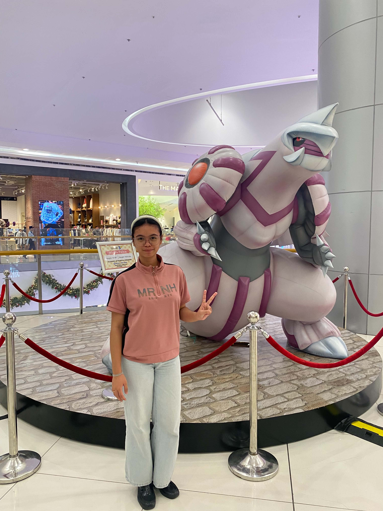
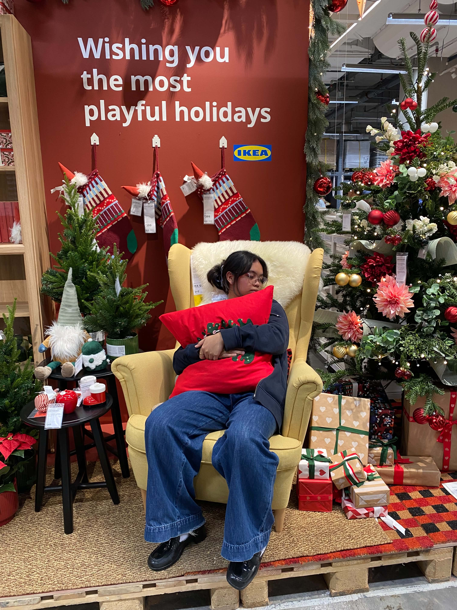
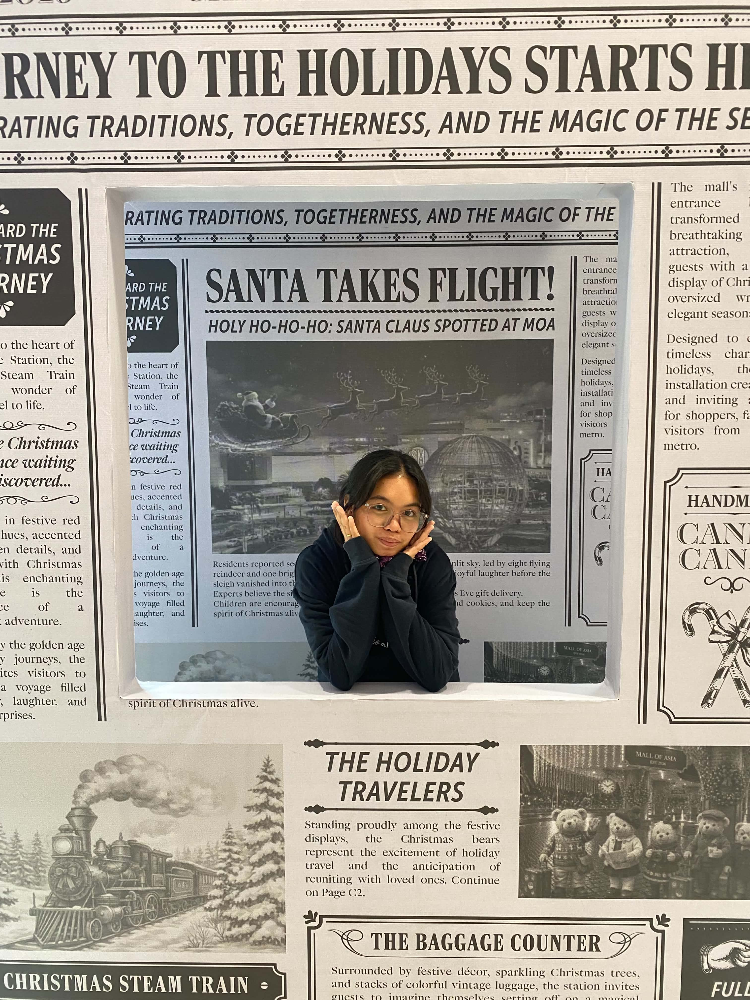

Hello! I'm Rodrigo Victor M. Beltran, a nature lover, plant enthusiast, and someone who finds joy in the little things. Whether I'm tending to my leafy friends, spending time with family, or exploring new hobbies, I always try to see the world with curiosity and gratitude.
Here are some snapshots of my life—myself, my family, and the person who inspire me every day.


